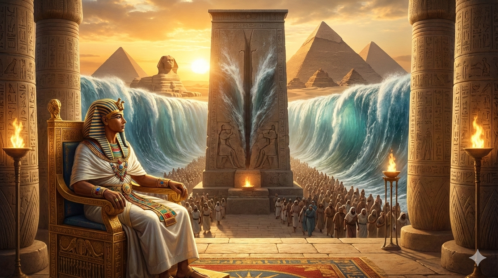

Égypte Éternelle · Dossier Thématique
Portrait des grandes divinités de l'Égypte ancienne — leurs natures, leurs mythes fondateurs et leur emprise sur une civilisation de trois millénaires
𓂀 Navigation
Cosmogonie · L'origine du monde
𓇳Atoum — Le Dieu primordialCréateur 𓇾Nout & Geb — Ciel et TerreCosmos 𓄿Chou & Tefnout — Air et HumiditéÉlémentsDieux Solaires · La lumière divine
𓇳Rê — Le Soleil souverainSoleil 𓊹Amon — Le Roi des dieuxVent caché ☀Aton — Le disque solaireMonothéisme 𓆣Khépri — L'aurore sacréeRenaissanceLe Cycle Osirien · Mort & résurrection
𓁹Osiris — Seigneur des mortsRésurrection 𓁹Isis — La Grande MagicienneMagie 𓅃Horus — Le dieu fauconRoyauté 𓃱Seth — Le dieu du chaosDésordre 𓇳Nephtys — La dame du châteauDeuil 𓀭Anubis — Guide des âmesMomificationSavoir, Écriture & Arts
𓁹Thot — Dieu de la sagesseÉcriture 𓆓Maât — La vérité cosmiqueJustice 𓌀Ptah — Le dieu artisanCréation 𓇋Séchat — La dame des étoilesArchivesIntroduction · Le monde divin égyptien
Le panthéon égyptien est l'un des plus vastes et des plus complexes de l'histoire humaine : plus de 2 000 divinités ont été recensées sur l'ensemble de la période pharaonique, certaines vénérées dans tout le pays, d'autres confinées à une seule ville ou à un seul temple. Mais comprendre ces dieux exige d'abord de se débarrasser de nos catégories modernes.
Les dieux égyptiens ne sont pas des personnes. Ce sont des forces cosmiques dotées de formes — ou plutôt de formes multiples, car un même dieu peut prendre des dizaines d'apparences différentes selon le contexte rituel, l'heure du jour ou la région du pays. Rê est scarabée à l'aube, disque solaire à midi, vieillard au coucher du soleil. Horus est faucon, enfant, homme à tête de faucon, œil, et parfois soleil. Ce phénomène, que l'égyptologue Erik Hornung appelle Vielgestaltigkeit (« multiplicité des formes »), est l'une des caractéristiques fondamentales de la pensée religieuse égyptienne.
Un autre trait essentiel est la syncrétisation : deux dieux peuvent se fusionner en un seul être composite pour en réunir les puissances — Amon-Rê, Ptah-Sokar-Osiris, Rê-Horakhty. Ces fusions ne font pas disparaître les dieux individuels ; elles ajoutent une couche supplémentaire à leur complexité. La religion égyptienne est additive plutôt qu'exclusive : elle accumule les formes divines sans en nier aucune.
Les Égyptiens ne croyaient pas en leurs dieux comme nous croyons à quelque chose. Ils vivaient dans un monde où les dieux étaient aussi réels que le soleil, le Nil et le désert — car ils étaient le soleil, le Nil et le désert.
— Erik Hornung, Conceptions of God in Ancient Egypt: The One and the Many, Cornell University Press, 1982| Système cosmologique | Ville | Divinité centrale | Spécificité |
|---|---|---|---|
| Ennéade d'Héliopolis | Iounou (Héliopolis) | Atoum / Rê | Création par masturbation ou crachement ; 9 dieux primordiaux |
| Ogdoade d'Hermopolis | Khemenu | Thot / Amon | 8 dieux primordiaux du chaos (couples mâle-femelle) |
| Théologie memphite | Ineb-Hedj (Memphis) | Ptah | Création par la pensée et la parole (logos divin) |
| Théologie thébaine | Ouaset (Thèbes) | Amon | Amon comme dieu caché, créateur et roi des dieux au Nouvel Empire |
Première sphère · L'origine
Avant le monde, il y avait Noun — l'océan primordial infini, obscur et immobile. De lui surgirent les premiers dieux.
Cosmogonie · Dieu créateur
Atoum est le dieu auto-créé — le premier être qui surgit spontanément des eaux primordiales du Noun, l'océan infini préexistant au monde. Son nom signifie à la fois « le Tout » et « le Rien » — paradoxe délibéré qui exprime une idée profonde : avant la création, Atoum contenait en lui-même toutes les potentialités sans qu'aucune soit encore actualisée.
Selon la cosmogonie héliopolitaine — la plus ancienne et la plus influente du monde égyptien — Atoum se crée lui-même par un acte de volonté sur la colline primordiale (benben), premier promontoire surgissant des eaux du chaos. Seul au monde, il engendre les deux premiers dieux-enfants Chou et Tefnout (l'air et l'humidité) par masturbation ou en les crachant de sa bouche — les textes varient selon la pudeur de leurs rédacteurs. De Chou et Tefnout naissent Nout et Geb (le ciel et la terre), et de ceux-ci les quatre grands dieux du cycle osirien : Osiris, Isis, Seth et Nephtys. L'Ennéade — les « Neuf » — est complète.
𓇳 L'Ennéade d'Héliopolis
L'Ennéade (du grec ennéa, « neuf ») est le conseil divin fondamental de la théologie héliopolitaine. Elle groupe : Atoum, Chou, Tefnout, Geb, Nout, Osiris, Isis, Seth, Nephtys. Ces neuf dieux représentent les forces cosmiques qui ont bâti l'univers, du chaos primordial jusqu'à l'ordre humain. Ils siègent comme tribunal lors du jugement des pharaons défunts et des affaires divines majeures.
Cosmogonie · Ciel et Terre
Nout est la déesse du ciel — non le ciel abstrait, mais le corps même du ciel. Elle est représentée comme une femme au corps arqué, bras et jambes tendus vers les quatre points cardinaux, dont le ventre étoilé forme la voûte nocturne. Chaque soir, le soleil entre dans sa bouche, traverse son corps pendant la nuit, et renaît de son ventre à l'aube — métaphore puissante du cycle de la mort et de la résurrection.
Geb, son époux et frère, est le dieu de la terre. Il est allongé sous Nout, son corps formant le sol sur lequel vivent les hommes. Les tremblements de terre sont ses rires. Il est souvent représenté avec une oie sur la tête — l'oie est son animal sacré — et sa peau est parfois verte, couleur de la végétation et de la renaissance. Le couple Nout-Geb, séparé par leur père Chou (l'air), représente la structure fondamentale de l'univers : le ciel au-dessus, la terre en dessous, l'air entre les deux — espace vital où les êtres vivent et respirent.
Nout n'est pas une déesse du ciel — elle est le ciel. Cette distinction est fondamentale : en Égypte, les dieux ne gouvernent pas la nature, ils la sont.
— Frankfort, H., Ancient Egyptian Religion, Columbia University Press, 1948Deuxième sphère · La lumière
Le soleil est la métaphore centrale de toute la théologie égyptienne — mort et résurrection, ordre et chaos, visibilité et mystère.
Dieux solaires · Souverain du ciel
Rê est le dieu le plus fondamental de la religion égyptienne — non pas le plus populaire, mais le plus central, le pivot autour duquel tournent toutes les autres théologies. Il est le soleil lui-même, dans toute sa puissance vitale. Son nom est le mot égyptien pour « soleil ». Dès l'Ancien Empire, le pharaon est appelé Sa-Rê, « fils de Rê » — titre qui souligne la nature divine de la royauté et la filiation cosmique entre le roi terrestre et le soleil céleste.
Le voyage quotidien de Rê structure le temps et l'espace égyptiens. Il traverse le ciel de l'est à l'ouest à bord de la barque solaire (Mandjet le jour, Mesektet la nuit), accompagné d'un équipage de dieux. La nuit, il emprunte le monde souterrain (Douat), affrontant le serpent géant Apophis qui cherche à le dévorer — et chaque aube représente la victoire de l'ordre sur le chaos, de la vie sur la mort. Cette bataille est éternelle et recommence chaque nuit sans trêve.
Rê n'est jamais une forme unique. À l'aube, il est Khépri, le scarabée qui roule la boule du soleil levant — métaphore du bousier roulant ses œufs dans une boule d'excréments, analogie cosmique de la régénération. À midi, il est Rê-Horakhty (Rê-Horus de l'horizon), à son apogée de puissance. Au coucher, il est Atoum, le vieillard épuisé qui s'apprête à mourir et renaître. Cette trinité solaire exprime le cycle complet d'une vie — naissance, maturité, mort — dans une seule journée.
𓇳 La Litanie de Rê
La Litanie de Rê est un texte funéraire du Nouvel Empire gravé à l'entrée des tombes royales de la Vallée des Rois. Elle invoque les 75 formes différentes de Rê, chacune portant un nom et une image distincts. Ce texte révèle la richesse stupéfiante de la pensée religieuse égyptienne : un dieu unique qui est simultanément 75 êtres différents, sans contradiction.
Dieux solaires · Roi des dieux
Amon est, paradoxalement, le plus puissant des dieux égyptiens tout en étant le plus insaisissable. Son nom signifie « le Caché » — il est le vent invisible qui fait bouger les feuilles, le souffle vital qui anime toute chair, la puissance divine qui échappe à toute représentation définitive. Dieu mineur à l'Ancien Empire, il émerge comme divinité locale de Thèbes avant de devenir, sous le Nouvel Empire, le roi des dieux dans sa forme syncrétisée Amon-Rê — fusion qui réunit la puissance cachée d'Amon et l'énergie lumineuse de Rê.
Le complexe de Karnak, agrandi pendant deux mille ans par pratiquement tous les pharaons du Nouvel Empire, est sa demeure terrestre. L'immensité de ce site — le plus grand complexe religieux jamais construit — témoigne de la richesse fantastique accumulée par le clergé d'Amon. Sous Thoutmôsis III, le grand prêtre d'Amon contrôle plus du tiers des terres arables d'Égypte. Cette accumulation de pouvoir économique et politique explique la réforme radicale d'Akhénaton, qui ferme les temples d'Amon et confisque leurs richesses.
La fête d'Opet, célébrée chaque année à Louxor, est la grande fête nationale d'Amon : pendant 11 à 27 jours, la statue du dieu voyage en barque sacrée depuis Karnak jusqu'au temple de Louxor, renouvelant la puissance divine du pharaon régnant. Cette procession à laquelle participait tout le peuple était l'événement le plus populaire du calendrier religieux thébain.
Amon est un mystère voulu : il est le dieu dont la nature même est d'être inconnaissable. Le décrire serait le réduire. Son invisibilité est sa puissance.
— Assmann, J., Egyptian Solar Religion in the New Kingdom, Kegan Paul, 1995Dieux solaires · Aurore
Khépri est la manifestation matinale du soleil — Rê au moment de sa naissance quotidienne. Il est représenté comme un scarabée (Scarabaeus sacer), l'insecte dont les Égyptiens observaient le comportement avec fascination : le bousier roule une boule de fumier contenant ses œufs, les enterre, et des larves en sortent spontanément — image parfaite de la vie surgissant de la matière morte, de l'être naissant du néant.
Son nom vient du verbe kheper, « venir à l'existence, se transformer ». L'amulette scarabée est l'amulette protectrice la plus répandue de tout l'art égyptien : on en a retrouvé des millions, en faïence, en stéatite, en lapis-lazuli, des plus humbles aux plus exquises. Le cœur-scarabée (grand scarabée en pierre placé sur la poitrine de la momie) portait une inscription de la formule magique empêchant le cœur de témoigner contre son propriétaire lors du jugement de l'âme.
Troisième sphère · Mort et renaissance
Le mythe fondateur de l'Égypte — meurtre, deuil, magie, vengeance et résurrection éternelle.
Cycle osirien · Seigneur de l'au-delà
Osiris est le dieu central de la religion égyptienne — celui dont le mythe structure la conception de la mort, de la justice et de la vie éternelle pour toute la civilisation pharaonique. Fils de Geb et Nout, il règne d'abord sur la terre comme roi civilisateur, enseignant aux hommes l'agriculture, la loi et les rites religieux. Sa peau verte ou noire évoque à la fois la végétation du Nil et le limon noir de la crue — la fertilité rendue possible par la mort et le pourrissement.
1. Le meurtre par Seth
Jaloux du règne d'Osiris, son frère Seth l'attire dans un piège : il fait construire un sarcophage à la mesure exacte du corps d'Osiris, l'invite à s'y allonger lors d'un banquet, puis le referme et le jette dans le Nil. Osiris se noie.
2. La quête d'Isis
Isis, son épouse, parcourt toute la terre à la recherche du corps. Elle le retrouve à Byblos (Liban), caché dans un arbre. Elle le ramène en Égypte.
3. La démembration
Seth, furieux, s'empare à nouveau du corps et le démembre en 14 (ou 42 selon les sources) morceaux dispersés dans tout le pays. Chaque sanctuaire osirien du pays prétendra détenir l'un de ces fragments.
4. La reconstitution magique
Isis, aidée de sa sœur Nephtys, retrouve tous les fragments sauf le phallus (avalé par un poisson du Nil). Elle reconstitue le corps et fabrique un phallus d'or. Elle se transforme en milan, survole le corps et conçoit miraculeusement Horus.
5. La première momification
Anubis embaume le corps d'Osiris — premier mort à être momifié, premier être à ressusciter. Osiris devient roi de l'au-delà, et toute momification rituelle renouvelle ce premier embaumement.
𓁹 Le jugement d'Osiris — La Pesée du cœur
Dans la Salle des Deux Vérités, Osiris préside le tribunal des morts. Le cœur du défunt est pesé sur une balance contre la plume de Maât. Thot note le résultat, 42 juges assesseurs interrogent l'âme. Si le cœur est pur, le défunt rejoint le champ des roseaux (Aaru), paradis fertile. Si le cœur est alourdi par les fautes, la chimère Ammout — corps d'hippopotame, tête de crocodile, arrière-train de lion — le dévore. Cette seconde mort est la seule vraiment définitive.
Cycle osirien · Grande Magicienne
Isis est la divinité féminine la plus puissante et la plus universelle de l'Égypte ancienne — et l'une des déesses dont le culte a eu le rayonnement le plus vaste dans l'Antiquité, se répandant jusqu'en Rome, en Gaule et en Grande-Bretagne. Elle est à la fois l'épouse parfaite (fidèle à Osiris jusque dans la mort), la mère idéale (elle protège l'enfant Horus dans les marais), et la magicienne suprême — la seule à posséder la magie assez puissante pour ressusciter les morts.
Son symbole est le trône (ȝst en égyptien) : son nom signifie littéralement « trône », et sa coiffe représente ce siège royal. Cette association profonde entre la déesse et le trône exprime l'idée que la légitimité royale elle-même est une émanation divine — le pharaon assis sur son trône est l'enfant d'Isis.
Le mythe de la ruse d'Isis contre Rê est l'une des histoires les plus savoureuses du panthéon égyptien : Isis confectionne un serpent avec de la terre et de la salive de Rê lui-même, et le pose sur le chemin du dieu solaire. Mordu, Rê souffre d'une douleur inexplicable. Isis lui propose de le guérir, mais à une condition : qu'il lui révèle son nom secret. Dans la conception égyptienne, connaître le vrai nom d'un être, c'est avoir pouvoir sur lui. Rê cède et murmure son nom à Isis — lui transférant ainsi une part de sa puissance cosmique.
Isis est la seule divinité égyptienne dont le culte ait survécu à la chute du paganisme romain. Son temple de Philae, en Haute Égypte, fut le dernier fermé par l'édit de Justinien — en 535 après J.-C. Trois mille ans de culte ininterrompu.
— Dunand, F. & Zivie-Coche, C., Dieux et Hommes en Égypte, Armand Colin, 2006Cycle osirien · Dieu de la royauté
Horus est le dieu vivant du pharaon — chaque roi d'Égypte est Horus incarné sur terre. C'est le fondement théologique de la royauté égyptienne : le pharaon n'est pas un homme qui gouverne au nom des dieux, il est lui-même un dieu en chair, fils d'Osiris et d'Isis, héritier du trône cosmique. À sa mort, il devient Osiris et son successeur devient à son tour Horus — chaîne ininterrompue de dieux incarnés depuis Narmer jusqu'à Cléopâtre.
Le conflit entre Horus et Seth pour le trône d'Égypte est l'un des mythes les plus longs et les plus riches du monde antique — le Papyrus Chester Beatty I (Nouvel Empire) en donne une version qui mêle combats épiques, procès divins, ruses et épisodes franchement comiques. Le combat dure 80 ans selon les textes, à travers des épreuves multiples : courses nautiques, combats d'hippopotames, joutes de métamorphoses. Le tribunal des dieux (Ennéade) hésite longtemps avant de trancher en faveur d'Horus — la légitimité filiale contre la force brute de Seth.
L'œil d'Horus (oudjat) — arraché par Seth durant le combat et restauré par Thot — est l'amulette la plus puissante et la plus répandue d'Égypte ancienne : symbole de guérison, de plénitude et de protection, il orne les pectoraux royaux, les proues des barques funéraires et les bandages des momies.
𓅃 Les formes multiples d'Horus
Horus se décline en de nombreuses formes : Horus l'Ancien (grand dieu céleste prédynastique), Horus l'enfant (Harpocrate, représenté suçant son doigt), Horus-de-l'Horizon (Horakhty, assimilé à Rê), Horus vengeur (jeune guerrier combattant Seth), Horus à la tête de faucon (dieu tutélaire des rois). Cette multiplicité n'est pas une confusion — c'est la richesse même du concept divin, qui peut se manifester sous toutes ses facettes selon le contexte.
Cycle osirien · Dieu du chaos
Seth est le dieu le plus ambigu, le plus mal compris et le plus fascinant du panthéon égyptien. Souvent réduit à un simple dieu du mal par les vulgarisations modernes, il est en réalité bien plus nuancé : Seth est le dieu de tout ce qui est incontrôlable, étranger et désordonné — le désert rouge (désert = Seth ; terre noire fertile = Osiris), les orages, la mer, les terres étrangères, mais aussi la force brute nécessaire pour défendre l'ordre contre ses ennemis.
Son animal emblématique est une créature hybride non identifiable dans la nature — seul dieu égyptien dont l'animal sacré n'existe pas réellement. Cette étrangeté est intentionnelle : Seth est l'Autre absolu, ce qui ne rentre dans aucune catégorie. Les Égyptiens avaient pourtant besoin de lui : sur la barque solaire de Rê traversant le monde souterrain la nuit, c'est Seth qui brandit sa lance pour repousser le serpent Apophis — son chaos contre le chaos ennemi, sa violence au service de l'ordre cosmique. Sans Seth, le soleil ne se lèverait pas.
𓃱 Seth et les Hyksos
Les Hyksos, envahisseurs du Delta à la deuxième période intermédiaire, adoptèrent Seth comme leur dieu principal, l'assimilant à leur dieu Baal. Ce choix contribua à la diabolisation définitive de Seth dans la tradition religieuse égyptienne postérieure : associé à la fois aux envahisseurs détestés et à leur dieu étranger, il devient progressivement au Nouvel Empire la figure du Mal absolu — perdant peu à peu ses nuances pour ne garder que ses aspects négatifs.
Cycle osirien · Guide des morts
Anubis est le dieu de la momification et de la protection des morts — l'un des plus anciens du panthéon égyptien, déjà présent dans les nécropoles prédynastiques. Avant qu'Osiris ne devienne le roi de l'au-delà au Moyen Empire, c'était Anubis qui régnait sur les morts. Son association avec le chacal est directe et pratique : les chacals rôdent la nuit autour des cimetières en quête de charogne. Plutôt que de craindre cette présence, les Égyptiens l'ont sacralisée — Anubis protège les tombes en y rôdant, gardien qui effraye les intrus et guide les âmes.
Sa couleur noire est essentielle : elle évoque à la fois la pourriture des corps (khmt, le noir de la décomposition) et la renaissance (la terre noire du Nil, fertile). Anubis est le premier embaumeur — c'est lui qui, selon le mythe, a momifié Osiris le premier, inventant ainsi la technique qui permettra à tous les Égyptiens d'espérer la résurrection. Durant les soixante-dix jours d'embaumement, un prêtre portant le masque d'Anubis présidait aux rites funéraires.
Anubis est venu à moi vêtu de ses bandelettes, tenant la balance. Son œil d'or pesait mon cœur dans la nuit du jugement, et il était léger comme la plume du vent.
— Adaptation du Livre des Morts, Chapitre 125, ~1550 av. J.-C.« Je suis hier et je connais demain. Qui est-il, ce Hier ? C'est Osiris. Qui est Demain ? C'est Rê. »
Quatrième sphère · La pensée
Les dieux qui ordonnent l'univers par la parole, la loi et la connaissance.
Savoir & écriture · Dieu de la lune
Thot est le dieu de la connaissance, de l'écriture, des mathématiques, de la lune et du temps — le scribe cosmique qui note tout ce qui arrive dans l'univers. C'est lui qui a inventé l'écriture hiéroglyphique (medu netjer, « les paroles des dieux »), les sciences, les arts et les lois. Son nom grec — Hermès Trismégiste (« Hermès trois fois grand ») — témoigne de la fascination que les Grecs avaient pour ce dieu égyptien, qu'ils assimilèrent à leur propre Hermès.
Thot joue des rôles cruciaux dans plusieurs mythes fondamentaux : c'est lui qui restaure l'œil d'Horus blessé par Seth (symbole de restauration et de guérison) ; c'est lui qui calcule les jours épagomènes (les cinq jours supplémentaires hors calendrier) en gagnant aux dés contre la Lune, permettant à Nout d'accoucher de ses enfants divins ; c'est lui qui, lors du jugement des morts, note le verdict de la pesée du cœur et lit la liste des 42 péchés au défunt.
Ses deux animaux sacrés — l'ibis et le babouin — ont des significations complémentaires : l'ibis, avec son long bec courbé qui ressemble à un calame plongeant dans l'eau, évoque le scribe en train d'écrire ; le babouin, qui pousse des cris caractéristiques au lever du soleil, était associé à l'accueil quotidien de la lumière et à la sagesse méditante.
𓁹 Les Livres de Thot
Selon la tradition hermétique tardive, Thot aurait rédigé 42 livres sacrés contenant toute la connaissance universelle — astronomie, médecine, rites funéraires, magie, géographie, lois. Ces « Livres de Thot » ont nourri l'imaginaire ésotérique occidental pendant deux millénaires. La tradition hermétique (corpus Hermeticum, IIe-IIIe siècles apr. J.-C.) et la kabbale médiévale s'en réclamèrent.
Justice & cosmos · Principe fondamental
Maât n'est pas seulement une déesse — elle est un principe cosmique fondamental, la force qui maintient l'univers en ordre depuis le premier matin de la création. Son nom désigne à la fois la vérité, la justice, l'harmonie, l'équilibre, la droiture et l'ordre naturel. Elle est la réponse égyptienne à la question : qu'est-ce qui distingue le bien du mal, le juste de l'injuste, l'ordre du chaos ?
Sa plume d'autruche — symbole et attribut — est la mesure de toute chose. Lors du jugement de l'âme, c'est contre cette plume que le cœur du défunt est pesé : si le cœur est vrai (pur, juste), il est aussi léger que la plume. La formule rituelle que récitait le défunt devant le tribunal d'Osiris est la célèbre confession négative (Chapitre 125 du Livre des Morts) : une liste de 42 péchés que le défunt affirme n'avoir pas commis — « Je n'ai pas volé, je n'ai pas tué, je n'ai pas menti, je n'ai pas fait pleurer, je n'ai pas pollué les eaux… »
Chaque pharaon, lors de son couronnement, est dit « offrir Maât » aux dieux — une statuette de la déesse qu'il présente au temple symbolise son engagement à gouverner justement. C'est le contrat fondamental entre le roi et l'univers : en échange de la justice du pharaon, les dieux maintiennent la crue du Nil, la rotation des saisons et la victoire militaire.
Maât est le concept le plus important de la pensée égyptienne. Elle est ce que l'Égypte a de plus proprement original à offrir à l'histoire morale de l'humanité.
— Jan Assmann, Ma'at: Gerechtigkeit und Unsterblichkeit im alten Ägypten, C.H. Beck, 1990Savoir & arts · Dieu artisan
Ptah est le dieu de Memphis, ancienne capitale de l'Égypte unifiée, et l'un des dieux les plus anciens du panthéon. Sa théologie est d'une modernité intellectuelle saisissante : selon le Texte memphite gravé sous Chabaka (XXVe Dynastie, mais copie d'un original de l'Ancien Empire), Ptah a créé l'univers par la pensée (sia) et la parole (hu) — le cœur qui conçoit et la langue qui énonce. Cette conception du logos créateur préfigure de manière troublante l'évangile de Jean (« Au commencement était le Verbe ») et la philosophie grecque.
Ptah est représenté de façon unique dans le panthéon : il est debout, emmailloté comme une momie, tenant un sceptre composite combinant le sceptre was (pouvoir), le djed (stabilité) et l'ânkh (vie). Sa tête est rasée, sa peau verte comme Osiris — couleur de la renaissance et de la création. Le taureau Apis, animal sacré abrité dans son temple de Memphis, était son incarnation vivante : un taureau noir aux marques blanches particulières sélectionné par les prêtres, traité comme un dieu et momifié à sa mort dans le Sérapéum de Saqqarah.
Cinquième sphère · Le vivant
Les dieux qui animent le monde naturel — le fleuve, les animaux, la germination et la sensualité.
Amour & beauté · Déesse de la joie
Hathor est l'une des divinités les plus aimées et les plus célébrées d'Égypte — celle qui préside aux plaisirs de la vie : l'amour, la beauté, la musique, la danse, l'ivresse et la fertilité. Son nom signifie « Demeure d'Horus » — elle est à la fois la mère, l'épouse et la fille d'Horus, selon les aspects qu'on lui prête. En tant que vache céleste, elle nourrit le roi de son lait divin, lui conférant force et légitimité divine.
Hathor a une face sombre que les textes n'occultent pas : le mythe de la destruction de l'humanité la voit se transformer en Sekhmet, lionne dévastatrice, envoyée par Rê pour punir les hommes de leurs rébellions. Elle commence à les massacrer jusqu'à ce que Rê lui-même s'alarme de l'extermination totale. Pour l'arrêter, les dieux inondent les champs de bière rouge (teintée d'ocre pour ressembler au sang) — Hathor/Sekhmet boit tout, s'enivre, et reprend sa forme douce d'Hathor. Ce mythe explique rituellement la consommation d'alcool lors des fêtes d'Hathor, notamment à Dendera.
Le grand temple de Dendera (époque ptolémaïque) est entièrement consacré à Hathor. Son toit porte le célèbre zodiaque de Dendera — la plus ancienne représentation circulaire du zodiaque au monde, aujourd'hui au Louvre.
L'instrument de musique favori d'Hathor est le sistrum — hochet sacré dont le son était censé chasser les mauvais esprits et réjouir les dieux. Les prêtresses d'Hathor le brandissaient lors des processions pour attirer la bienveillance divine.
Nature & Nil · Dieu crocodile
Sobek est le dieu du Nil dans sa dimension la plus puissante et la plus dangereuse : le crocodile, animal que les Égyptiens révéraient et craignaient à la fois. Sa vénération est directement proportionnelle à la présence des crocodiles dans les bras du Nil — abondante dans le Fayoum et en Haute Égypte, plus rare dans le delta. À Crocodilopolis (ville du Fayoum), des crocodiles sacrés vivaient dans des bassins du temple, nourris de viande et de vin, parés de bijoux en or, vénérés comme des dieux vivants.
Sobek est aussi associé à la puissance royale — sa force brutale, sa domination sur l'eau (source de vie) et son œil perçant (les crocodiles observent sans trahir leur présence) en font un symbole parfait de la souveraineté. De nombreux pharaons portèrent son nom : Sobeknéfrou (première reine régnante attestée), Sobekhotep I-VIII (Moyen Empire). Son grand temple de Kom Ombo (partagé avec Haroeris, forme d'Horus) est l'un des mieux conservés d'Égypte.
Sixième sphère · La protection
Les divinités qui veillent sur les vivants et les morts — contre la maladie, le chaos et les puissances ténébreuses.
Gardiens · Déesse lionne
Sekhmet est la force dévastatrice du soleil — le feu brûlant de Rê dans sa dimension destructrice. Elle est la Puissante, celle dont le souffle est le vent chaud du désert, dont le regard lance des flammes et dont la colère déclenche les épidémies. Paradoxe fondamental de la religion égyptienne : la même déesse qui répand les maladies est aussi celle qui les guérit. Les médecins, les chirurgiens et les exorcistes étaient tous des prêtres de Sekhmet — seule la déesse capable de causer un mal peut le défaire.
À Memphis, des milliers de statues de Sekhmet — en granit noir, impassibles et majestueuses — peuplaient le temple de Ptah. Pour chaque jour de l'année et chaque heure du jour et de la nuit, une statue différente était vénérée, apaisée par des rites et des offrandes — manière systématique de calmer la colère divine à chaque instant du temps.
𓁹 La triade memphite
À Memphis, les trois grandes divinités formaient une triade familiale : Ptah le père, Sekhmet la mère, et Nefertoum le fils (dieu du lotus, symbole de l'aube et de la beauté). Ce modèle de la triade divine — père, mère, enfant — se retrouve dans de nombreux temples égyptiens : Amon, Mout et Khonsou à Thèbes ; Osiris, Isis et Horus à Abydos.
Gardiens · Déesse chatte
Bastet est la face douce et protectrice du soleil — comme Sekhmet en est la face brûlante. Dans la théologie de la déesse lointaine, Bastet et Sekhmet sont deux aspects d'une même divinité : l'une furieuse, l'autre apaisée. Les rites d'apaisement de Sekhmet transforment la déesse colérique en Bastet bienveillante — déesse du foyer, de la joie, de la danse, de la fertilité et de la protection des femmes enceintes.
Le culte de Bastet à Boubastis (delta du Nil) était l'occasion d'une fête annuelle que l'historien Hérodote décrit comme la plus joyeuse d'Égypte : des bateaux chargés de pèlerins remontaient le Nil en musique, chantant, dansant, consommant d'énormes quantités de vin. Des centaines de milliers de personnes se retrouvaient à Boubastis pour festoyer en l'honneur de la déesse. Des millions de chats momifiés ont été retrouvés dans les nécropoles de son sanctuaire.
Gardiens · Ennemi cosmique
Apophis n'est pas un dieu — il est l'anti-dieu, la personnification du chaos absolu, du néant qui cherche à avaler le soleil et à replonger l'univers dans l'obscurité primordiale du Noun. Il n'a pas de temple, pas de prêtres, pas de culte — mais il a ses propres textes : les Livres de la Destruction d'Apophis (Amdouat, Livre des Portes) décrivent en détail comment le combattre chaque nuit dans le monde souterrain.
Chaque nuit, Rê traverse la Douat en barque et rencontre Apophis dans la douzième heure — la plus dangereuse, juste avant l'aube. Le serpent, long de kilomètres, tente d'avaler la barque solaire. C'est Seth qui le repousse à la lance. Thot prononce les formules magiques qui le repoussent. Chaque aube est une victoire — chaque coucher du soleil, une inquiétude cosmique renouvelée.
Dans les temples, lors de certains rites nocturnes, les prêtres brûlaient des figurines en cire d'Apophis, les maudissaient par son nom, les piétinaient et les crachaient dessus — pratique de magie apotropaïque visant à affaiblir le serpent et à garantir le lever du soleil. Ce rite était accompli dans les temples à intervalles réguliers, surtout lors des tempêtes et des éclipses solaires.
𓆙 L'ordre contre le chaos — Maât contre Isfet
La tension fondamentale de la cosmologie égyptienne oppose Maât (l'ordre, la vérité, la justice) à Isfet (le chaos, le mensonge, le désordre). Apophis est la personnification ultime d'Isfet. Maintenir Maât — en accomplissant les rites, en rendant la justice, en construisant les temples — est le devoir sacré de chaque pharaon. Sans cet effort constant, Apophis triompherait et le soleil ne se lèverait plus.
𓂀 Sources & Lectures recommandées